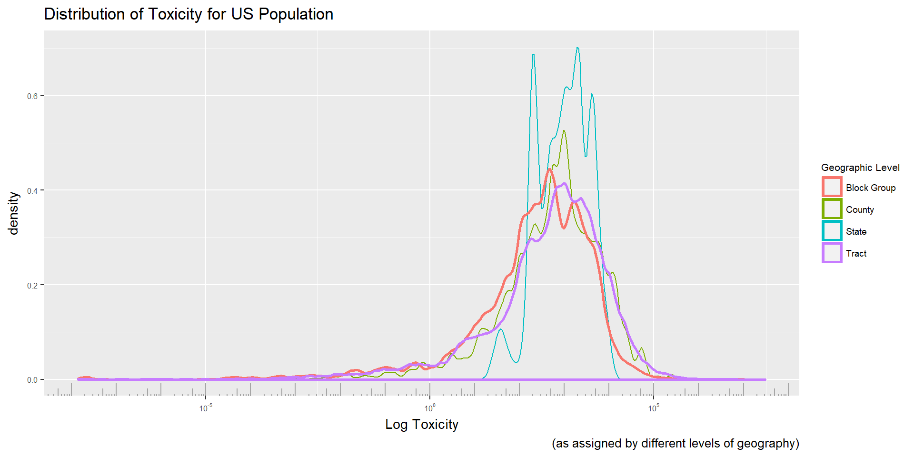

Chapter 3 Approaches and Methods
3.1 Geographic Level of Analysis
The questions we would like to pose - how the distributions of toxicity that individuals experience over time are predicted by their complex, multidimensional identities - is inherently intended to be a person level analysis. That intent may not be achievable given the available data.
This analysis depends on two data sources, the disaggregated RSEI toxic release data (as compiled to contain only releases that are consistently reported between 1990 and 2010) as well as relevant demographic information from the Census.
RSEI toxicity data can be obtained at extremely fine level (the 800 meter grid across the United States,) but the finest grain Census data is available at is the block level, which contains between 0 and a few hundred people. At such low geographic levels, few variables are available for demographics due to identifiability concerns. At low levels cross tabulations are not available due to concerns of identifiability. Using a low level of geography (like census blocks or block groups) is important for the environmental aspect of this analysis, since environmental hazards can be very localized, especially along neighborhood lines in urban areas.
Unfortunately, the availability of cross tabulations is equally important to the goal of this work in examining inequality of environmental burden held by minority groups in America. The intersection of social identies, especially those steeped in systems of oppression, is extremely important for identifying unequal burdens. For example, low income populations across the board may be more likely to experience environmental hazards, but low income minority populations could be much more likely than low income white populations to experience extreme hazard. The intersections of demographic charictersitics, such as race and income or race and education are likely to be important in teasing out differences true inequality burden.
We combine the computed aggregated toxicity for each block group and the demographic data. Now for each census geography, we have toxicity information as well as demographic data.
| block | concentration | area | total_pop | white | black |
|---|---|---|---|---|---|
| 010010201001 | 627.3050 | 6.520168 | 530 | 447 | 83 |
| 010010201002 | 499.6298 | 8.486690 | 1282 | 1099 | 126 |
| 010010202001 | 578.8312 | 3.137173 | 1274 | 363 | 824 |
| 010010202002 | 756.3733 | 1.962949 | 944 | 458 | 477 |
| 010010203001 | 637.7356 | 5.907125 | 2538 | 2152 | 384 |
| … | … | … | … | … | … |
To move to a person level analysis, we can assign each of the people the toxicity for the geography they originated in. By assigning each person the toxicity of their block group, we can aggregate nationally to find the distribution of toxicity that each group experiences. This approach is restricted in ability to approach the problem in an intersectional manner, since we can only build a distribution for each of the crosstabs we have available. For higher levels of geography (where we might, for example, have race by income) we would be able to build national distributions for each income by race group.
In the case of the table above, to build a distribution for the white population, we would assing 447 people a toxicity of ~627, 1099 people a toxicity of ~499 and so on until we have the full distribution of toxicities experienced by the white population.
In choosing the level of aggregation at which to assign toxicity, in order to balance the needs of accuracy of toxicity and availability of cross tabulations, we create the overall toxicity distribution for Americans at each of the levels of geography. The process described above can be excecuted with the data shown above, or at a cruder level of geography, such as state. Using block group as the smallest form of geography, and state as the largest (including tract and county in between) we see how the distribution changes at each level of aggregation.

As expected, the state level assignment is a poor approximation of the lower level assignments. Given that we are assigning each individual the mean toxicity in their entire state, we are eliminating most of the variation from the data. Interestingly tract and county data seems to build a distribution quite similar to the block group level assignment. Initial results were replicated using all 3 levels of assignment, and no different conclusions were reached. This may be because the block group level is aggregating a large enough group of our fine grain toxicity data that it lost the street block by street block variation that we had deemed so crucial, meaning aggregating several block groups gives us a conceptual equivalent ‘neighborhood’ level of aggregation.
3.2 Temporal Level of Analysis
Given the layout of this non-parametric method, we can find the changes in positional distribution for any two given years. Though we are most interested in the complete change from the starting year of 1988 to 2014, as that is the data we have, the gradual changes and the speed of change from year to year is also of interest. While we have the full range of data from 1988 to 2014 for the toxicity data, we only have available Census data from the decennial census and the ACS. That means that we have snapshots of data from 1990, 2000, and continuous data for 2010 on.
In order to do a continuous analysis from 1990 until the most recent toxicity data (2014), we chose to use linear interpolation between the decenial census. For current data, we use the 5 year ACS sample.
3.3 Simulation
To examine the change of environmental burden over time for groups we first use simulation to tease apart the forces in play as each group’s distribution changes over time. For any given value, the percentile it holds in a minority distribution is likely to be different from the percentile it holds in the overall distribution. For example, in 2010 the 75th percentile of the black distribution is 2528.45, while that same value is the 81.44th percentile in the overall distribution.
We expect the mean of minority distributions to reduce over time for two reasons: first we assume the entire distribution will slowly be shifting right as we see improvements in environmentally friendly production technology and more comprehensive envirnmental regulation. Secondly, we hope that with Title VI protetections, and the work of civil rights advocates, minority communities will better protected against the economic power frequently held by polluters.
In order to track how minority distribution and the overall distribution have changed over the period of study, we use the positions that minority groups held in the overall distribution at the start of the period of study to simulate how each group’s distribution would have progressed through time assuming a static position in society at large. This simulation proceeds as follows:
Build an emipirical distribution of toxicity experienced for the entire population and for groups of interest in the starting year.
Sample individuals from the empirical distributions for the entire population and the groups of interest.
For each sampled value, find the percentile in the empirical distribution for the entire population in the starting year.
Create an empirical distribution for the entire population in the ending year.
For each sampled percentile, find the corresponding value in the full empirical distribution of the ending year and assign to the appropriate group of interest.
Using this method we can hold constant the place each individual (and more broadly each group) holds in the overall distribution, but follow the changes in the distribution as a whole. The collection of values simulated now represents where each individual or group would have been had there been no positional improvement for the group as a whole.
If there had been improvement for a group, we would expect the simulated distributions to paint a bleaker picture of the environmental burden borne than the true distribution of the ending year.
3.3.1 Simulation Accuracy
We use bootstrap sampling to approximate the standard errors of the simulated estimates of the 5th, 50th and 95th quantiles with different values for n. This is done by simulating the new distribution at time t repeatedly with varying n, and describing the distribution of quantiles produced. This sampling helps us to choose a size of the sample to get an accurate measure, and frames the final values we report.

For the 5th quantile, a relatively low n produces a fairly stable result, sampling with n = 15,000 appears sufficient. Due to the extreme right skew of the data, the 95th percentile requires a larger sample. Still n = 50,000 is sufficient.